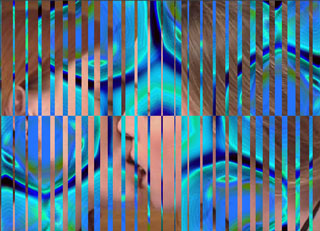

FFRend
FFRend (Freeframe Renderer) is a renderer for Freeframe plugins. It allows you to chain any number of plugins together, automate their parameters using oscillators, and record the output to an AVI file. The input is a video (AVI/MPG), still image (BMP/JPG/GIF), or source plugin.
Most VJ softwares support Freeframe, and can record their output, so what makes FFRend different? FFRend is optimized for content generation, whereas VJ softwares are typically optimized for live performance. The key difference is that FFRend never drops frames, even when your project is too CPU-intensive to be rendered in real time.
It's also possible to perform with FFRend. The user interface is modular, dual-monitor is fully supported, and all parameters and oscillator settings can be controlled via MIDI. Version 2 also supports parallel processing on multi-core CPUs, for greatly improved frame rates.
FFRend supports plugin authoring, which means you can export a FFRend project as a Freeframe plugin. The exported plugin is called a metaplugin, because it uses other plugins as components. A metaplugin can be used in any Freeframe-compatible host application, and behaves as if you were running the equivalent project in FFRend.
FFRend is free, open-source software for Windows XP/Vista/Win7. It includes comprehensive help, an installer, and a simple demo project. If you want to render complex effects at high resolution, using chains of automated Freeframe plugins, FFRend is your friend.
June 5, 2012
FFRend 2.2.07 fixes some issues with monitoring. Please download the latest version, and check the release notes.
May 22, 2012
FFRend 2.2.06 fixes some serious bugs which were introduced in version 2.2.02.
May 20, 2012
FFRend 2.2.05 fixes some fairly minor UI bugs.
May 10, 2012
FFRend 2.2.04 adds column resizing, and fixes a few bugs.
Apr 4, 2012
FFRend 2.2.03 brings back monitor source selection, and fixes a few bugs. Note that the check for updates feature introduced in 2.2.02 was failing to find its installer script. This is now fixed.
Jan 24, 2012
FFRend 2.2.02 fixes problems with synchronization of oscillators between plugins, and also fixes a serious bug in the previous version which caused the entire desktop to flicker whenever a row view was updated.
Dec 29, 2011
The new Fauve plugin colorizes input in the style of Fauvism! Here's an example, and another. It's available for download, and here's how it works.
Dec 16, 2011
FFRend 2.2.01 introduces a playlist, better integrates the load-balancing feature, improves memory management, and fixes a number of bugs. A new Histogram plugin is also available for download: it displays a continuous histogram of the input video, in various modes.
Nov 17, 2011
FFRend 2.2.00 fixes some relatively minor bugs.
Aug 25, 2011
New plugins include a radar sweep source, character and text generators with antialiasing, a mask mixer, and a multiply mixer. Download them here, read about them here.
Jun 1, 2011
FFRend 2.1.02 fixes a bug in the load balancing feature which can cause unexpected strobing.
May 31, 2011
FFRend 2.1.01 fixes a serious bug which can cause incorrect behavior when editing plugin parameters via their sliders.
May 19, 2011
FFRend 2.1.00 adds a major performance enhancement: load balancing! Read the manual page, and for an overview of ganging as a way around Amdahl's law, see the author's illustrated article Pipelining for Plugin Chains. This version also fixes many bugs, some of them serious.
Jun 25, 2010
The latest upgrade to version 2 fixes some minor bugs related to recording.
Jun 20, 2010
The initial release of version 2 has a bug which can cause "The application failed to initialize properly (0xc0150002)." Please download the latest version.
Jun 10, 2010
The long-awaited version 2 of FFRend, with parallel processing and so much more, is available for download. Here's what's new in version 2.
Jan 17, 2008
FFRend 1.7 adds metaparameter groups. It's available for download.
Dec 17, 2007
FFRend 1.6 adds MPEG support via AviSynth, clip thumbnails in the file browser, and the ability to monitor the output of any plugin.
Nov 11, 2007
FFRend 1.5 adds a job queue for batch processing, and a global plugin that can be applied to all your projects.
Mar 3, 2007
FFRend 1.4 adds metaplugins, a plugin authoring capability.
Feb 12, 2007
FFRend finally has a demo movie, thanks to another fine evening of collaboration with Jeff Mission; the music is "Hate Me Not" by Boston's own Scorchio.
Feb 1, 2007
FFRend 1.3.08 fixes some issues with the dual-monitor support, and makes MIDI Setup a control bar instead of a modal dialog.
Jan 17, 2007
FFRend 1.3 supports multi-input plugins! And there was much rejoicing. This version also adds new sizable control bars, including a patch bay, a file browser, and an output monitor.
Dec 28, 2006
BoolMix is a boolean mixer effect plugin. It blends two input frames together using a boolean operation. It's now available for download; you can read about it here.
Dec 8, 2006
WaveGen is a wave generator effect plugin. It's useful for making all sorts of periodically repeating shapes. I'm using it to create animated keying masks, as in the images below. It's now available for download; you can read about it here.

Dec 4, 2006
PlayerFF is a clip player source plugin that reads AVI files or still images. It's now available for download; you can read about it here.
Nov 30, 2006
Version 1.2 is available for download. It adds unlimited undo, and also fixes some minor problems; see the release notes.
Nov 15, 2006
Version 1.1 is available for download. It adds MIDI support, and also fixes some minor problems; see the release notes.
Oct 30, 2006
Version 1.0.04 is available for download. It contains some important bug fixes; see the release notes.
Oct 26, 2006
FFRend 1.0 is available for download.
Sep 20, 2006
Beta release is still at least a few weeks away.
{kind=link}
{kind=link}
{kind=link}
{kind=link}